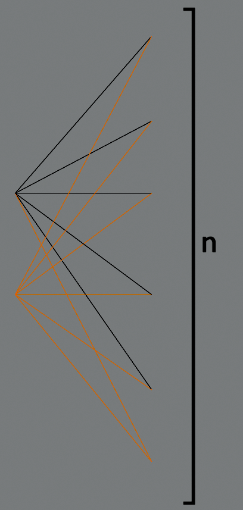

Drzewa
Załóżmy, że \(G = (V, E)\) jest takim grafem prostym, że \(|E| \ge |V|\). Pokaż, że graf \(G\) zawiera cykl.
Niech \(|V| = n\). Wówczas \(|E| \ge n\).
Minimalną liczbą krawędzi jaką musi mieć graf spójny jest \(n-1\) – mamy wtedy drzewo, w którym nie ma żadnych cykli. Jednakże mamy do dyspozycji przynajmniej \(n\) krawędzi, co daje nam możliwość „doklejenia” gdzieś w naszym drzewie jednej krawędzi zamykając cykl jednej ze już istniejących ścieżek w drzewie.
W przypadku grafów niespójnych (mamy więcej niż jedną składową) sytuacja jest podobna – tutaj mamy nawet więcej możliwości budowania cykli z już istniejących ścieżek.
Niech \(G = (V, E)\) będzie grafem prostym. Załóżmy, że \(v \in V\) jest wierzchołkiem o stopniu nieparzystym. Pokaż, że istnieje inny wierzchołek \(u \in V\) o rzędzie nieparzystym od którego jest jakaś droga od \(v\).
Wskazówka: Zajmij się komponentą spójną grafu G do której należy wierzchołek v.
W każdym spójnym grafie (a możemy tutaj według wskazówki ograniczyć się do komponenty gdzie mamy nasze \(v\) oraz \(u\) i traktować to jako osobny graf) zachodzi: \[ \sum_{x \in V} \deg(v) = 2\cdot|E| \]
Co oznacza, że albo każdy wierzchołek ma parzysty \(\deg\) (poza zakresem zadania) albo liczba wierzchołków o nieparzystym \(\deg\) jest parzysta. Jako, że wiemy o istnieniu takiego wierzchołka \(v\), że \(2 \nmid \deg(v)\) to ta liczba musi wynosić przynajmniej \(2\) – czyli istnieje drugi wierzchołek \(u\) o takim samym \(\deg\).
Wyznacz liczbę grafów rozpinających w grafach \(K_{2,n}\).
Nazwijmy dwie części grafu \(A\) oraz \(B\) gdzie \(A\) to dwa wierzchołki z pierwszej składowej \(K_{\bold{2},n}\), a \(B\) to pozostałe \(n\) wierzchołków z drugiej składowej.
Wyznaczmy pierwsze drzewo startując na jednym z wierzchołków ze zbioru \(A\): 
Wybieramy jeden wierzchołek z \(B\) który łączymy z wszystkimi wierzchołkami ze zbioru \(A\).
Teraz musimy doliczyć wszystkie pozostałe drzewa rozpinające. Zauważmy, że musi być zawsze jeden wierzchołek z \(B\) łączący oba wierzchołki z \(A\) (swego rodzaju mediator pomiędzy wierzchołkami z \(A\)). Mamy \(n\) możliwości do wyboru takiego wierzchołka.
Następnie musimy rozdystrybuować resztę \(n-1\) wierzchołków z \(B\) pomiędzy dwa wierzchołki z \(A\). Robimy to na \(2^{n-1}\) sposobów jako, że iterując po wszystkich pozostałych \(n-1\) wierzchołkach z \(B\) za każdym razem mamy dwie opcje do wyboru.
Dzielimy otrzymany wynik przez \(2\), żeby nie liczyć dwa razy grafów które są izomorficzne ze sobą.
Zatem ostatecznym wynikiem będzie \(n\cdot 2^{n-2}\) dla \(n\ge 2\) kiedy dla \(n=1\) mamy tylko jedno takie drzewo.
Zadanie 38
W dodatku A znajduje się kod prostej klasy języka Python implementującą graf prosty.
- Dodaj do taj klasy metody służące do wyznaczania \(\delta(G)\), \(\overline{d}(G)\) oraz \(\Delta(G)\)
- Dodaj do tej klasy metodę
eccktóra służy do obliczania ekscentryczności wierzchołka- Dodaj do tej klasy metodę służącą do wyznaczania promienia i średnicy grafu.
Zadanie 39
Do klasy z dodatku A dodaj metodę służącą do wyznaczania drzewa rozpinającego grafu.